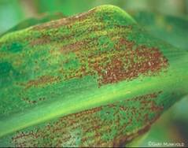
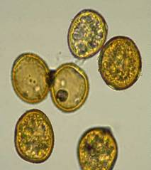
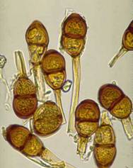

| Home |
| MAIZE |
mAJOR DISEASES |
| 1. Downy Mildew |
| 2. Sorghum downy mildew |
| 3. Phlippine downy mildew |
| 4. Crazy top |
| 5. Leaf blight |
| 6. Rust |
| 7. Head smut |
| 8. Charcoal rot |
mAJOR DISEASES |
| 1. Bacterial Stalk rot |
| 2. Mosaic |
| 3. Brown spot |
| Questions |
| Download Notes |
MAIZE :: MAJOR DISEASES :: RUST
Rust - Puccinia sorghi
Symptoms
Circular to oval, elongated cinnamon-brown powdery pustules are scattered over both surface of the leaves. As the plant matures, the pustules become brown to black owing to the replacement of red uredospores by black teliospores.
{kind=link}
|  |
Symptoms |
Pathogen
Uredospores are globose or elliptical finely echinulate, yellowish brown with 4 germpores. Teliospores are brownish black, or dark brown, oblong to ellipsoidal, rounded to flattened at the apex. They are two celled and slightly constricted at the septum and the spore wall is thickened at the apex.
|  |  |
Uredospores and teliospoes |
|
Favourable Conditions
- Cool temperature and high relative humidity.
Disease cycle
Primary source of inoculums is uredospores surviving on alternate hosts viz., Oxalis corniculataand Euchlaena mexicana.
Management
- Remove the alternate hosts.
- Spray Mancozeb at 2 kg/ha.